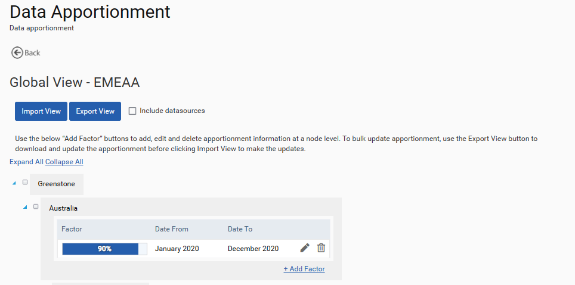

In some Views, users may wish to apply an apportionment so that only some of the data for each node is shown in the dashboards and reports. For example, mixed use buildings may need to be apportioned in different business unit or category views. This is set up by clicking on ‘Data Appointment’ at the View that requires apportionment and navigating to the node that requires apportioning. An apportionment factor can then be added as a % alongside a time period. A ‘from date’ is required but the ‘to date’ can be left blank to apply an indefinite apportionment. All non-apportioned nodes will display 100% of data in that view. When a view is copied it is possible to copy it with or without any apportionment.

Apportionment values can be added in bulk. Click Export View to download the existing apportionment values, which can be used as a template. In the template file, you can update the Apportionment Factor, Apportionment Start and Apportionment End columns to make changes to these details. Users can also add new rows of apportionment to the file. In order to do this, please add a “0” to the Apportionment ID (Column F) and the system will assign an ID on reimport.